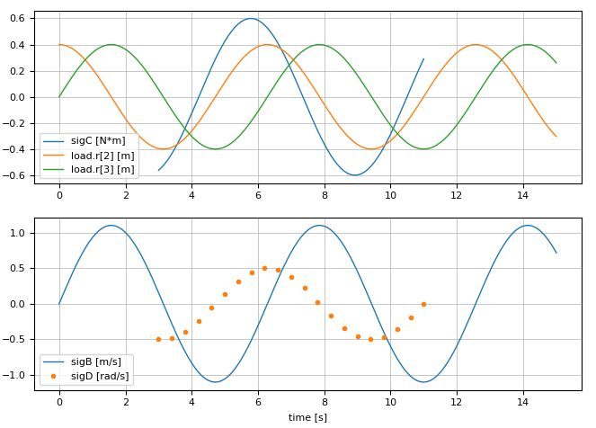

SignalTables Documentation
Package SignalTables provides types and functions for signals that are represented by multi-dimensional arrays with identical first dimensions and are collected in tables. Typically, simulation results, reference signals, and table-based input signals can be represented by a signal table. More specifically:
A signal table is a (dictionary-like) type that supports the Abstract Signal Table Interface for example SignalTable. It defines a set of signals in tabular format. A signal is identified by its String name and is a representation of the values of a variable $v$ as a (partial) function $v(t)$ of the independent variable $t = v_{independent}$.
The values of $v(t)$ are stored with key :values in dictionary Var (= abbreviation for Variable) and are represented by an array where v.values[i,j,k,...] is element v[j,k,...] of variable $v$ at $t_i$. If an element of $v$ is not defined at $t_ì$, it has a value of missing.
If $v(t) = v_{const}$ is constant, it is stored in element :value in dictionary Par (= abbreviation for Parameter) and is represented by any Julia type where v.value is the value of $v_{const}$ at all elements $t_i$.
Example:
using SignalTables
using Unitful
t = 0.0:0.1:0.5
sigTable = SignalTable(
"time" => Var(values= t, unit="s", variability="independent"),
"load.r" => Var(values= [sin.(t) cos.(t) sin.(t)], unit="m"),
"motor.angle" => Var(values= sin.(t), unit="rad", state=true),
"motor.w" => Var(values= cos.(t), unit="rad/s", integral="motor.angle"),
"motor.w_ref" => Var(values= 0.9*[sin.(t) cos.(t)], unit = ["rad", "1/s"],
info="Reference angle and speed"),
"wm" => Var(alias = "motor.w"),
"ref.clock" => Var(values= [true, missing, missing, true, missing, missing],
variability="clock"),
"ref.trigger" => Var(values= [missing, missing, true, missing, true, true],
variability="trigger"),
"motor.w_c" => Var(values= [0.8, missing, missing, 1.5, missing, missing],
variability="clocked", clock="ref.clock"),
"motor.inertia"=> Par(value = 0.02f0, unit="kg*m/s^2"),
"motor.data" => Par(value = "resources/motorMap.json"),
"attributes" => Par(info = "This is a test signal table")
)
phi_m_sig = getSignal( sigTable, "motor.angle") # = Var(values=..., unit=..., ...)
phi_m = getValuesWithUnit(sigTable, "motor.angle") # = [0.0, 0.0998, 0.1986, ...]u"rad"
w_c = getValues( sigTable, "motor.w_c" ) # = [0.8, missing, missing, 1.5, ...]
inertia = getValueWithUnit( sigTable, "motor.inertia") # = 0.02u"kg*m/s^2"
getValues(sigTable, "motor.w") === getValues(sigTable, "wm")
showInfo(sigTable)The last command generates the following output:
name unit size basetype kind attributes
─────────────────────────────────────────────────────────────────────────────────────────
time "s" (6,) Float64 Var variability="independent"
load.r "m" (6,3) Float64 Var
motor.angle "rad" (6,) Float64 Var state=true
motor.w "rad/s" (6,) Float64 Var integral="motor.angle"
motor.w_ref ["rad","1/s"] (6,2) Float64 Var info="Reference angle and speed"
wm "rad/s" (6,) Float64 Var integral="motor.angle", alias="motor.w"
ref.clock (6,) Bool Var variability="clock"
ref.trigger (6,) Bool Var variability="trigger"
motor.w_c (6,) Float64 Var variability="clocked", clock="ref.clock"
motor.inertia "kg*m/s^2" () Float32 Par
motor.data () String Par
attributes Par info="This is a test signal table"The commands
usePlotPackage("PyPlot") # or ENV["SignalTablesPlotPackage"] = "PyPlot"
...
@usingPlotPackage # = using SignalTablesInterface_PyPlot
plot(sigTable, [("sigA", "sigB", "sigC"), "r[2:3]"]) # generate line plotsgenerate the following line plot:

Concrete implementations of the Abstract Signal Table Interface are provided for:
SignalTable(included in SignalTables.jl).
Planned implementations (basically adapting from ModiaResult.jl):
- Modia.jl (a modeling and simulation environment)
- DataFrames.jl (tabular data; first column is independent variable; only scalar variables))
- Tables.jl (abstract tables, e.g. CSV tables; first column is independent variable; only scalar variables).
Concrete implementations of the Abstract Line Plot Interface are provided for:
Planned implementations (basically adapting from ModiaResult.jl):
- PyPlot (plots with Matplotlib from Python),
- GLMakie (interactive plots in an OpenGL window),
- WGLMakie (interactive plots in a browser window),
- CairoMakie (static plots on file with publication quality).
Furthermore, there is a dummy implementation included in SignalTables that is useful when performing tests with runtests.jl, in order that no plot package needs to be loaded during the tests:
- SilentNoPlot (= all plot calls are silently ignored).
Installation
The packages are not yet registered. Once this is done, installation is performed with
julia> ]add SignalTables
add SignalTablesInterface_PyPlot # if plotting with PyPlot desired
add SignalTablesInterface_GLMakie # if plotting with GLMakie desired
add SignalTablesInterface_WGLMakie # if plotting with WGLMakie desired
add SignalTablesInterface_CairoMakie # if plotting with CairoMakie desiredIf you have trouble installing SignalTablesInterface_PyPlot, see Installation of PyPlot.jl
Installation of PyPlot.jl
SignalTablesInterface_PyPlot.jl uses PyPlot.jl which in turn uses Python. Therefore a Python installation is needed. Installation might give problems in some cases. Here are some hints what to do (you may also consult the documentation of PyPlot.jl).
Before installing SignalTablesInterface_PyPlot.jl make sure that PyPlot.jl is working:
]add PyPlot
using PyPlot
t = [0,1,2,3,4]
plot(t,2*t)If the commands above give a plot window. Everything is fine.
If you get errors or no plot window appears or Julia crashes, try to first install a standard Python installation from Julia:
# Start a new Julia session
ENV["PYTHON"] = "" # Let Julia install Python
]build PyCall
exit() # Exit Juila
# Start a new Julia session
]add PyPlot
using PyPlot
t = [0,1,2,3,4]
plot(t,2*t)If the above does not work, or you want to use another Python distribution, install a Python 3.x distribution that contains Matplotlib, set ENV["PYTHON"] = "<path-above-python-installation>/python.exe" and follow the steps above. Note, SignalTablesInterface_PyPlot is based on the Python 3.x version of Matplotlib where some keywords are different to the Python 2.x version.
Release Notes
Version 0.1.0
- Initial version (based on ModiaResult.jl.
Main developer
Martin Otter, DLR - Institute of System Dynamics and Control